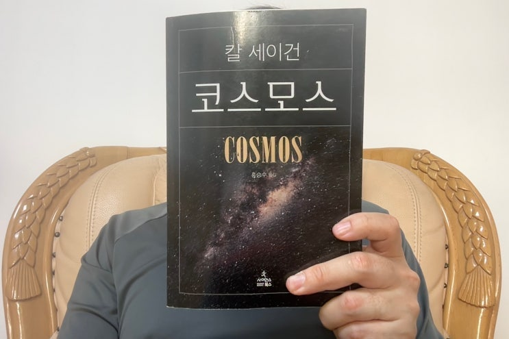
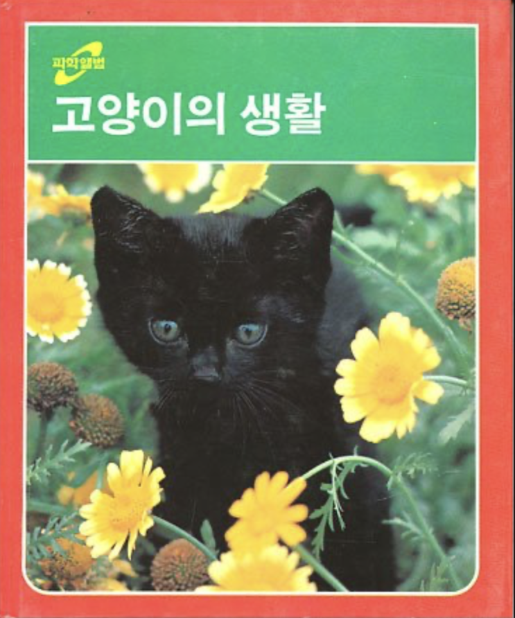
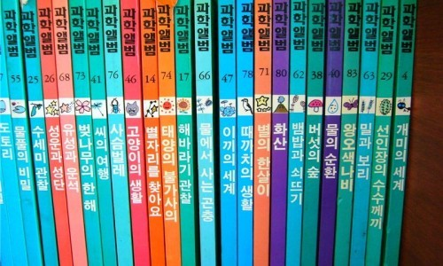
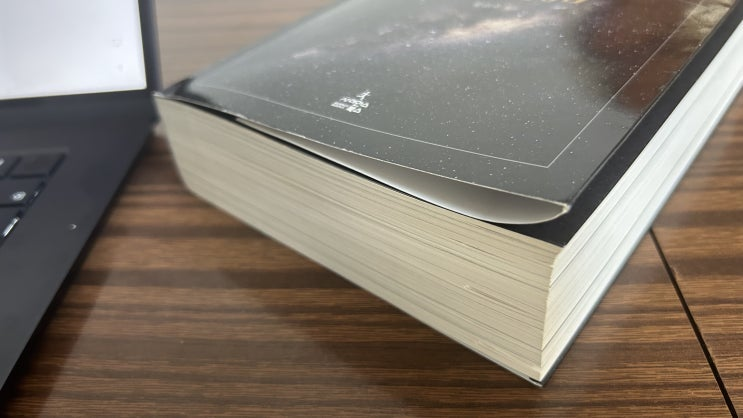
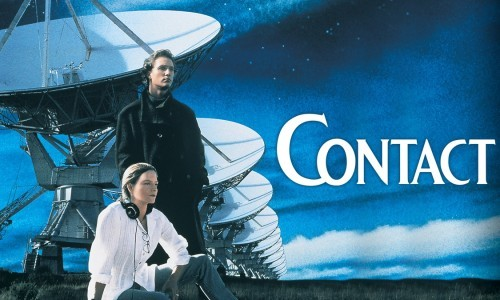
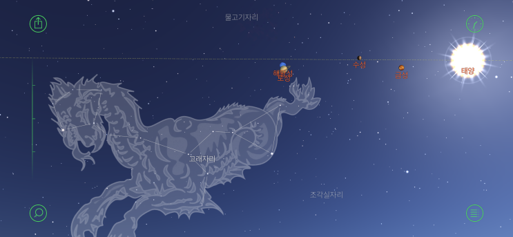
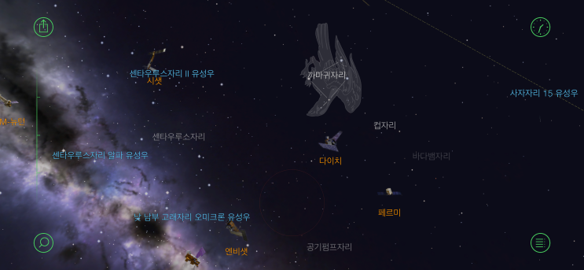

8~9살 때 쯤 이었습니다.
당시 막 지었던 주공 아파트 5층에 살고 있었는데 아주머니들을 따라 2층으로 갔습니다. 2층은 아주머니들이 늘 모이는
지금으로 따지면 맘 까페 같은 곳이었습니다.
2층집 아들인 훈이랑 같이 당시 신문물이었던 게임기에 빠져 놀고 있었는데 엄마가 저를 부르시더니 70여권 짜리 전집을
사줄껀데 읽을꺼냐고 물어보셨습니다. 머뭇 거리는 저에게 평소 본 적 없던 아주머니가 읽으면 정말 재미있는게 많다고,
꼭 읽어야 한다고 권유해 주셨습니다. 빨리 다시 게임이 하고 싶어서 우물쭈물 '네~' 라고 대답했고 며칠 후 집으로 거대한
책 박스가 도착했습니다.
저에게 하늘과 별에 대한 관심을 키워준 '웅진 과학엘범' 세트였습니다.
과학엘범은 일본에서 라이선스를 받은 어린이용 과학책으로 사진이 참 많았던게 특징이었습니다. 70여권 정도 였는데 그
중에 좋아하는 책도 있었고 싫어하는 책도 있었습니다. 좋아했던 책들은 대부분 별과 우주에 대한 이야기였고, 싫어했던
책들은 사자나 팽귄같은 동물 이야기였던 것 같습니다.
(아 그래도 검은 아기고양이 시저의 생장을 다룬 고양이의 생활은 너무 좋았습니다 ㅎㅎ)

엄마 가 헤어지기 시전하실 때 막 나도 울었음
그 많은 책 중에서도 유난히 많이, 수십번 이상을 읽어서 너덜너덜해진 책들이 있었는데, 별자리를 찾아요, 행성 탐험, 유
성과 운석과 같은 .... 아직도 잊혀지지 않는 이름들 입니다.

X의 Mutansan*님(@mutansan)
어렸을 때 가장 좋아했던 책중엔 과학앨범이라는 일본산 전집 시리즈가 있는데(친구 엄마가 영업사원이었던듯) 책에 나오
는대로 식물도 키워보고(나팔꽃 미모사 등) 동물 지식도 배우고 과학자의 꿈을 키워봄... 정말 좋아해서 다 크고 나서도 몇
번씩 봤다
과학엘범을 통해 우주와 과학의 신비를 접한 후 저는 끊임없이 우주에 대한 책들을 탐독해 나갔습니다.
나중에 집안이 개발샀 났기 때문에 책살 돈이 없는 와중에서도 늘 한시갈 걸음 걸이에 있는 도서관을 가서 뉴턴이라는 잡
지를 보았고 (아 ! 그리고 그 유명한 뉴턴 하일라이트도!) 스티븐 호킹 박사의 시간의 화살도 읽었습니다 (당시 잘 이해는
되지 않았습니다!). 그 외 여러가지 우주와 시간 그리고 물리학에 대한 많은 책들을 끊임 없이 탐독했습니다.
그러고 보면 왜 그 와중에서 코스모스라는 책을 보지 않았는가 하면 좀 의문이긴 합니다. 이 쪽 계통의 바이블이라고 불리
는 책인데 한 번도 읽지 않았다는게 참 신기할 뿐입니다.
사실 이번에도 제가 읽을려고 산 것은 아니고, 따님과 같은 청소년들이 읽기에 좋은 책이라고 추천 받아 한국 온 지인을 통
해 받았는데, 설 연휴간 뭐할까 하다가 한 번 훑어나 보자 해서 읽어보게 된 것이었습니다.

아따 책 두께 보소 ㄷㄷ (720페이지)
그러고 보니 칼 세이건과는 제가 인연이 좀 있습니다.
아니 뭐 개인적이고 대단한건 아니구요 ㅋㅋ
제가 가장 좋아하는 영화 중에 하나인 '컨택트'가 칼 세이건이 쓴 동명의 소설을 영화화 한 것입니다.

Contact - Apple
TV
Jodie Foster and Matthew McConaughey star in this gripping story of a radio astronomer who receives the
first extraterrestrial radio signal ever picke…
tv.apple.com
아직도 기억에 남는 장면은 소수(prime number)를 이용해 이 신호가 우연이 아닌 지능이 있는 존재로부터 만들어졌음을
해석해내는 장면과 신호를 통해 받은 내용들을 아무리 해석해도 이해를 할 수 없다가 이것을 삼차원 면에 붙인 후 읽으면
의미가 살아나는 것을 알게 되는 장면입니다
(90년대 초반 우주에 대한 낭만과 희망이 섞여 있던 그런 시절의 향기가 진하게 뭍어 있는 영화입니다
삼체였으면 신호 보
낸 놈들 이미 다 뒤졌음 ㅋㅋ)
책을 읽고나니 어릴 적 여러 기억들이 떠올라 오늘은 서론이 무척 길었네요. 그럼 책 내용으로 한 번 들어가 보겠습니다.
이 책의 강점은 자칫 재미없을 수도 있는 천문학에 대한 이야기를 대중의 눈높이게 맞추어 쉽게 쓰면서 거기에 다른 이야
기들을 (역사/과학사/수학/생물학/국제관계 등등등등등) 멋지게 엮어 낸 점입니다.
과거 한 때 유행했던 키워드인 '통섭적 사고'의 시조새 쯤 되는 책입니다.
당시에는 과학책은 과학 이야기, 역사책은 역사 이야기.. 이렇게 전문적으로 하나에 대해서 쓰는게 상식 이었는데 80년대
코스모스가 처음으로 여러 학문과 생각을 한 방에 엮는 시도를 하였다고 합니다. 진짜인지 가짜인지 검증은 잘 안됩니다
만, 암튼 그 이후로 많은 사람들이 코스모스라는 작품에 영향을 받아 단순히 한 과학의 영역이 아닌, 우리는 무엇이며 어디
로 가는 것인가와 같은 근본적인 질문부터 현실까지 하나로 엮는 스타일의 책이 많이 나왔다고 하네요 (지금은 이런 책이
참 많죠 ㅎㅎ)
제가 책에서 가장 인상 깊었던 부분은 우주에 대한 관점이 변해가는 과학의 역사였습니다. 고대 전설의 시대 이야기에서
천동설로, 천동설에서 태양 중심의 지동설로, 태양이 우주의 중심이 아니라는 깨닳음, 우리 은하 밖에는 수 없이 많은 은하
가 존재하며 이 공간은 팽창하고 있대는 배움까지 우리 인류는 저 하늘의 보이지 않는 검은 공간을 설명하기 위해 수천년
의 시간을 포기하지 않고 한발 한발 앞으로 나아갔습니다. 비록 중간에는 신비주의적인 믿음으로 인해 이러한 발전의 역사
가 좌절되는 경우도 1000년 정도 있었지만 (아마 이 때가 없었다면 지금 쯤 달 식민지 있을 듯 ㅋㅋ) 그럼에도 불구하고
우리 인류는 진실을 찾아가기 위해 회의하고 도전하고 고민하면서 하나하나 지성을 쌓아가 지금에 이르게 된 것입니다.
칼 세이건은 천문학자이자 타고난 이야기 꾼으로 인류 역사와 우주에 대한 탐험은 700여 페이지에 걸쳐서 풀어내는데, 와
필력이 좋아 (번역도 참 잘 하신 듯), 정말 술술 잘 넘어갑니다. 마치 아주 아주 긴 영화를 보는 느낌입니다. 하긴 코스모스
라는 책이 원래 TV 시리즈가 나오고 나서 일종의 확장팩 같은 느낌으로 나온 책이기 때문에 이야기 구성이 탄탄하고 흥미
진진할 수 밖에 없는게 당연하긴 합니다.
그냥 문뜩 드는 생각인데, 80년대는 이런 과학 프로그램이 일반 대중에서 센세이션을 일으킬 정도로 사회 자체가 미래에
대한 진보로 부풀어 있었던 시대였던 것 같습니다. (만화 20세기 소년이 이쯤을 다룬 이야기이지요 ㅎㅎ)
물론 이 책도 단점은 있습니다.
40년 전 책이라서 그런지 확실이 좀 옛날 이야기 입니다. 그림도 옛날 겁니다
당연하잖아
그래도 역자분께서 나름 각주로
업데이트를 열심히 해 주셨습니다 (그 업뎃도 20년 전꺼임 ㅋㅋ). 홍승수 선생님 번역과 업뎃 정말 감사합니다.
어려운 과학 이야기를 대중의 눈높이에 맞추어서 풀어야 하기 때문에 복잡한 개념을 너무 단순화 했다는 비판도 많습니다.
하지만 주 대상이 TV 앞에 앉아서 우주가 뭔지 궁금해 하던 어른과 아이들이었단 것을 생각해보면 저는 이러한 구성이 단
점이라기 보다는 오히려 장점이라고 생각합니다. 모두가 천문학자가 될 필요는 없다고 생각하고, 이 책을 읽고나서 관심이
생긴 아이들 중 몇 명이 천문학자가 될 수 있다면 그 역할을 충분히 하였다고 생각합니다.
야 임마 어려운거 보고 싶으면 걍 논문 검색해서 보면 되잖아
그리고 읽고나서 느끼는 것인데, 제가 어릴 적부터 지금까지 읽었던 모든 우주와 과학에 대한 이야기들이 대부분 이 코스
모스 책에서 나왔다는 것도 알게 되었습니다. 그 만큼 대중에 큰 영향을 주었다는 것이겠죠. 제 우주에 대한 모든 배움은
이 책의 영향력 아래 있었다는 것이 참 신기하기도 하고 그렇습니다.
책의 난이도 자체는 위에도 이야기 한 것 처럼 무척 낮습니다. 두께에 너무 질리지 마시고 그냥 잼있는 다큐멘터리 12편
정도 본다고 생각하시고 (?!) 즐겁게 읽으시면 어느새 다 읽고 마지막 책 장을 덮는 자신을 만나보실 수 있을 것입니다. .
책에서 가장 인상깊었던 마지막 부분에 대한 내용으로 독후감을 마칩니다.
360만 년, 46억 년 그리고 150억 년.
수소의 재에 서 시작한 인류는 광막한 시간과 공간을 가로질러 지금 여기까지 걸어 왔다.
인류는 우주 한구석에 박힌 미물이었으나 이제 스스로를 인식 할 줄 아는 존재로 이만큼 성장했다.
그리고 이제 자신의 기원을 더듬을 줄도 알게 됐다.
별에서 만들어진 물질이 별에 대해 숙고할 줄 알게 됐다.
10억의 10억 배의 또 10억 배의 그리고 또 거기에 10배나 되는 수의 원자들이 결합한 하나의 유기체가 원자 자
체의 진화를 꿰뚫어 생각할 줄 알게 됐다.
우주의 한구석에서 의식의 탄생이 있기까지 시간의 흐름을 거슬러 올라갈 줄도 알게 됐다.
우리는 종으로서의 인류를 사랑해야 하며, 지구에게 충성해야 한다.
아니면, 그 누가 우리의 지구를 대변해 줄 수 있겠는가?
우리의 생존은 우리 자신만이 이룩한 업적이 아니다.
그러므로 오늘을 사는 우리는 인류를 여기에 있게 한 코스모스에게 감사해야 할 것이다.
p682
지금은 일에 치여서 하늘 볼 시간도 없고, 가끔 시간이 좀 나면 리뷰엉이나 듣는 배나온 아저씨가 되었지만, 그래도 마음
속에는 늘 한켠에 소년시절에 가지고 있었던 하늘과 별에 대한 꿈이 있습니다.


2011년에 구입해서 아직까지도 쓰고 있는 전설의 앱 Starwalk
(카카오톡보다 더 오래쓴 앱인 듯)
지금도 가끔 여행지에서 하늘을 볼 때 쓰는 별자리 앱이다
오래간만에 그 꿈을 다시한번 기억하게 하는 멋진 독서경험이었습니다.
가능하면 아이들도 꼭 읽었으면 하는 책입니다.
감사합니다.
끝.